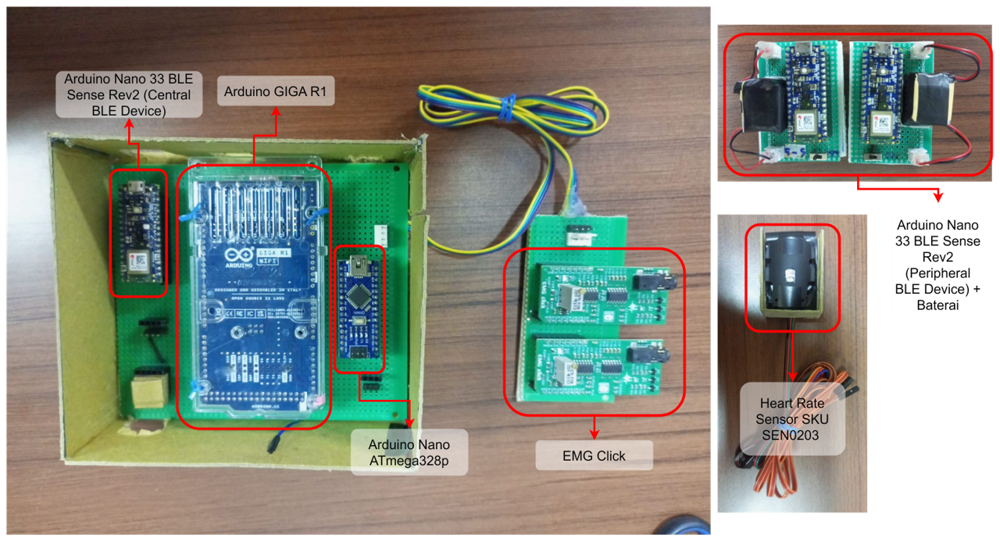
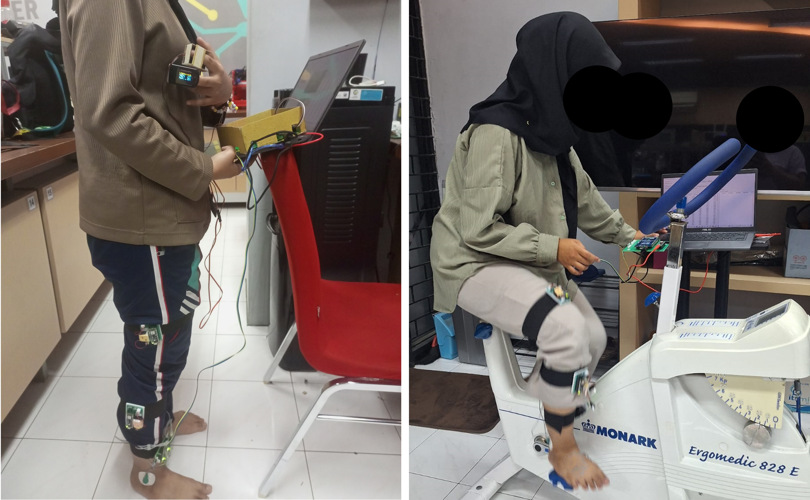
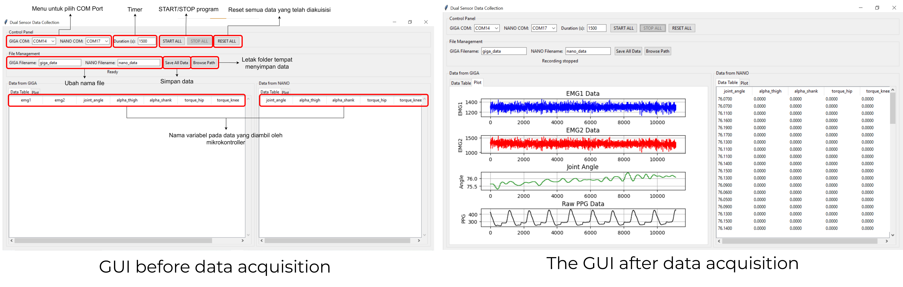
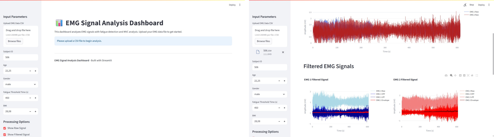

Developed a multi-board biomedical embedded system for synchronized physiological and biomechanical data acquisition during cycling exercise using Arduino-based microcontrollers. There is three sections in this project, which are:

The system architecture consists of a master-slave configuration, where the Arduino GIGA R1 WiFi serves as the master controller, coordinating data acquisition from the three Arduino Nano 33 BLE Sense Rev2 boards (slaves) and the Arduino Nano (slave). The rest of the board are connected to the master board using serial communication.The master board is responsible for synchronizing data collection across all sensors and managing communication between the slave boards.
This is what the system looks like when it's all put together. The master board (Arduino GIGA R1 WiFi) is connected to the computer for data visualization and storage, while the BLE peripheral devices are attached to the cyclist's thigh and shank to capture biomechanical data during cycling motion analysis. The Arduino Nano is used for heart rate monitoring through PPG signal acquisition.

Data acquisition was performed during a cycling exercise protocol, where the cyclist pedaled on a stationary bike while wearing the BLE peripheral devices on the thigh and shank. The master board (Arduino GIGA R1 WiFi) collected synchronized EMG signals from the EMG Click sensors, IMU data from the BLE peripheral devices, and heart rate data from the Arduino Nano. The acquired data was transmitted in real-time to a computer for visualization and storage using serial communication. Below are the example of the program before and after it acquired data during the cycling exercise protocol.

As you can see, the EMG signals are still full of noise and artifacts, so it needs to be processed using signal processing before analyzing the data. Meanwhile, the IMU data are already calculated as joint angle on the board and the heart rate data is already fine with minimum of noise, so it can be directly analyzed without further processing.
These features were used for muscle fatigue estimation and machine learning analysis.

There is two parameters that are estimated. Both of knee joint range of motion (ROM) and hip and knee joint torque are estimated using rotational dynamics and anthropometric body parameters.
The heart rate data was analyzed to assess the cyclist's cardiovascular response during the cycling exercise protocol. Does it declined or inclined during the exercise?
All of the data extracted from all of the processing above are collected into one big datasets. Machine learning algorithms were applied for muscle fatigue estimation and classification. The performance of machine learning models was evaluated using metrics such as accuracy, precision, recall, and F1-score.